하룻밤에 만든 축구 드래프트 게임, 38-0-0
첫 사례는 영국 App Store 무료 게임 순위 1위에 오른 축구 게임 38-0-0이에요. 영상은 이 게임이 Claude로 단 하룻밤에 만들어졌다는 데서 출발해요. 발표자는 토스 출신 9년 차 백엔드 개발자로, 게임 개발은 전혀 몰랐지만 지금까지 AI(Artificial Intelligence)로 게임 14개를 만들었다고 소개해요.
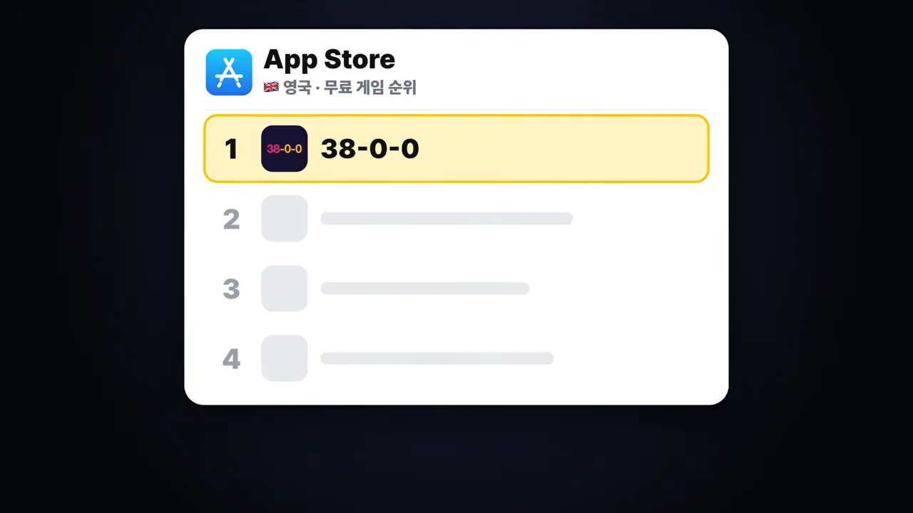
어떻게 하는 게임인가요
이름의 38-0-0은 한 시즌 38경기를 38승 0무 0패로 끝낸다는 뜻이에요. 화면 왼쪽에 적힌 대로 흐름은 세 단계예요. 선수를 뽑아 팀을 만들고, 그 팀으로 한 시즌을 돌리고, 성적을 확인해요. 시작할 때는 Classic과 Expert 모드 중 하나를 골라요.
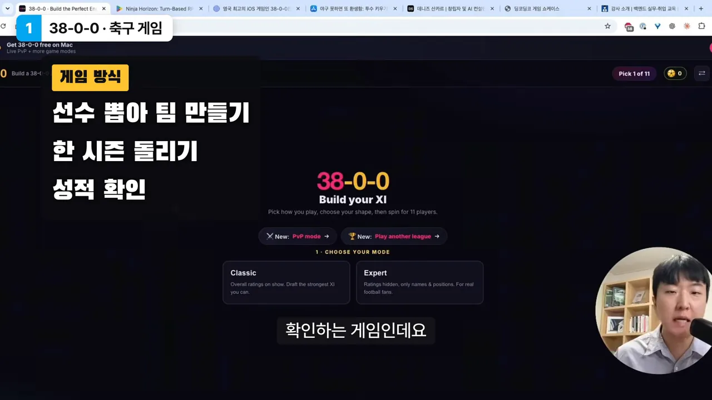
뽑을 때마다 무작위로 클럽과 연도가 정해지고, 그 팀 선수 목록에서 한 명을 골라 4-3-3 포메이션의 빈자리에 넣어요. 아래 화면은 2024년 아스널 선수 목록이 뜬 순간이에요. 목록 위 노란 버튼이 '클럽을 다시 돌려보세요 (광고 시청)'이에요. 마음에 안 드는 팀이 나오면 광고를 보고 다시 돌리는 식으로 수익을 내요.
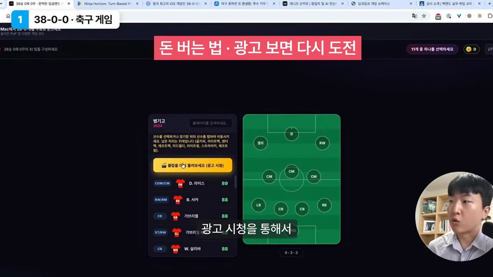
팀과 연도가 섞이다 보니 현실에서는 한 팀에 모일 수 없는 선수들이 같이 뛰게 돼요. 발표자는 박지성 선수를 넣으며 축구 팬이라면 이런 조합 자체를 즐길 거라고 봐요. 축구 매니지먼트 게임 FM(Football Manager)과 비슷한 재미라는 거예요. 특정 분야의 팬층이 확실할수록 그 팬들의 향수를 건드리기 쉬워요.
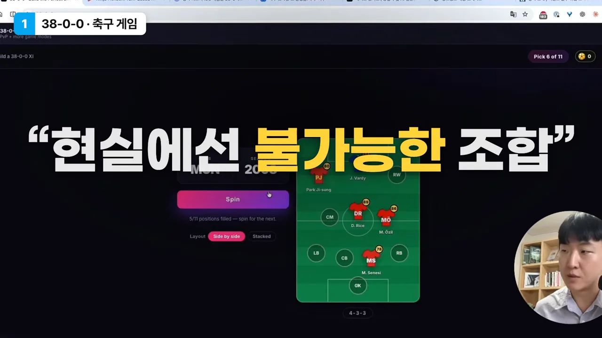
결과가 나오면 다시 도전해요
열한 자리를 다 채우면 시즌 결과가 나와요. 발표자의 팀은 19승 10무 9패였어요. 화면 위에는 '당신이 선택한 XI로 38승 0패 0무를 달성할 수 있을까요?'라는 문구가 있고, 손글씨로 '목표 · 38전 전승'이 적혀 있어요. 목표와 내 결과의 거리가 보이니 더 나은 팀을 만들려고 계속 다시 하게 돼요.
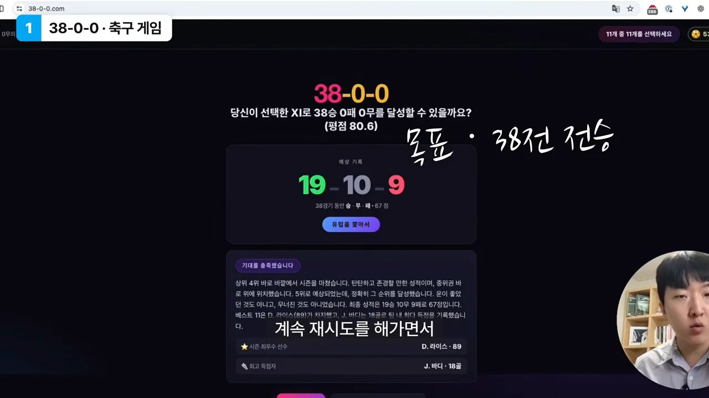
지금까지 본 흐름을 하나로 이으면 아래처럼 돌아가요. 결과가 목표에 못 미치면 처음으로 돌아가고, 마음에 안 드는 팀이 나오면 광고를 보고 다시 돌려요.
또 하고 싶어지는 이유, 그리고 82-0
38-0-0을 하다 보니 발표자는 한동안 유행한 인생 시뮬레이션 게임 '80억 분의 1'이 떠올랐다고 해요. 왼쪽 위 큰 제목이 게임 이름이고, 오른쪽은 지금 태어나는 아이의 출생지를 나라별 막대로 보여 줘요. 태어날 곳을 무작위로 뽑고, 그 뒤의 선택이 삶의 결과를 바꾸는 구조예요.
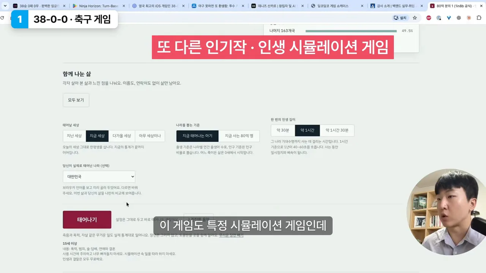
"한 판 더"를 부르는 세 가지
발표자는 두 게임이 인기를 끈 이유를 한 장으로 정리해요. 주사위 아이콘의 랜덤 출생, 섞기 아이콘의 내 선택, 가면 아이콘의 매번 다른 결과예요. 선택에 따라 다양한 결과를 맛볼 수 있으니 리플레이성이 높아지고, 그래서 계속 다시 하게 된다는 분석이에요.
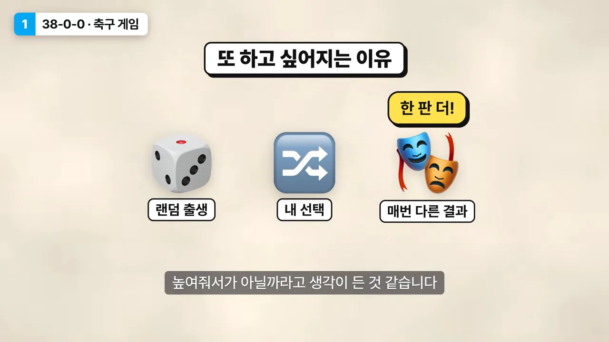
만들고도 내놓지 않았던 게임
발표자도 인생 시뮬레이션 게임을 만들고 있었어요. 아래는 발표자가 스레드에 올린 글이에요. '인생 시뮬레이션 게임이 바이럴 됐다, 나도 개발 중이었는데, 이제는 정말 실행이 중요한 시대가 된 것 같다'는 내용이에요. 완성도가 부족하다고 느껴 출시를 미뤘는데, 비슷한 게임이 퍼지는 걸 보고 더 빨리 움직였어야 했다고 말해요.
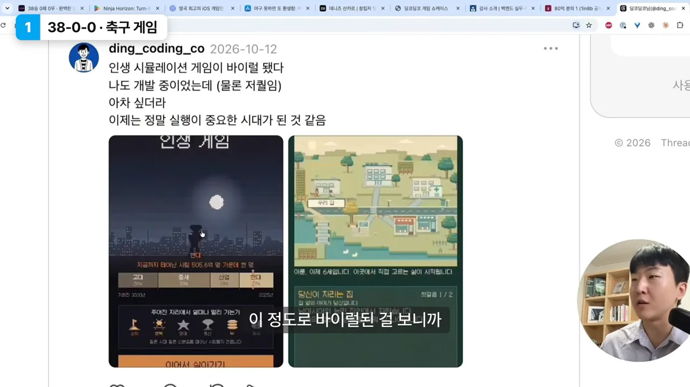
원래 아이디어는 농구 게임 82-0
38-0-0의 아이디어는 농구 드래프트 게임 82-0에서 왔어요. 82-0은 NBA(National Basketball Association) 한 시즌 82경기를 전승한다는 뜻이에요. 발표자는 두 게임을 나란히 놓고 UI(User Interface)와 구성 요소가 거의 같다고 말해요. 그래도 같은 재미를 관심사가 다른 사람들, 곧 축구 팬에게 맞게 옮겨 성공시킨 점이 인상적이라고 봐요.
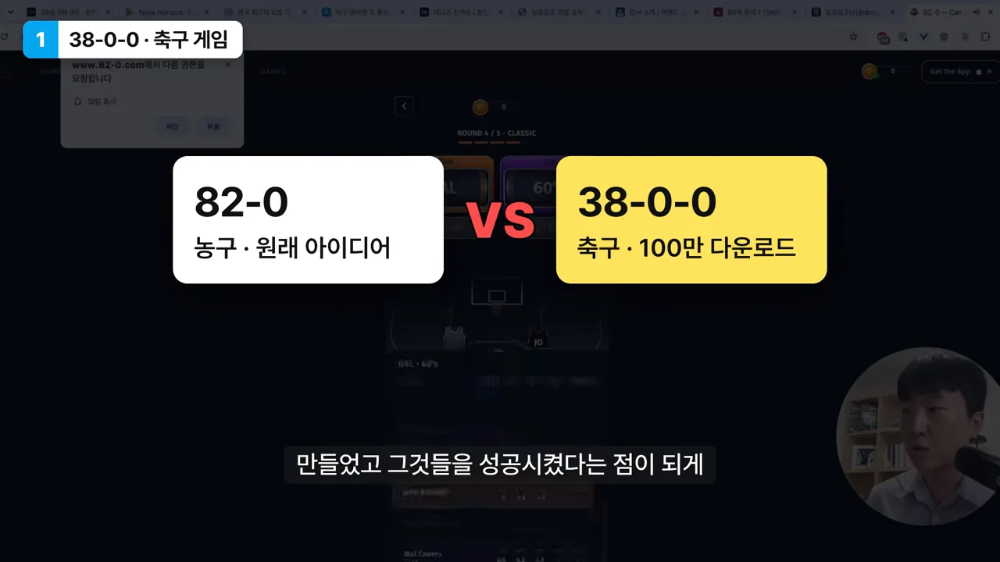
차이도 있어요. 38-0-0은 보상과 랭킹 요소를 더 넣었어요. 아래 화면 가운데에 금·은·동 단상 위로 상위 세 명이 올라가 있고, 위쪽 탭으로 Classic 모드의 전체·주간·일간 순위를 나눠 봐요.
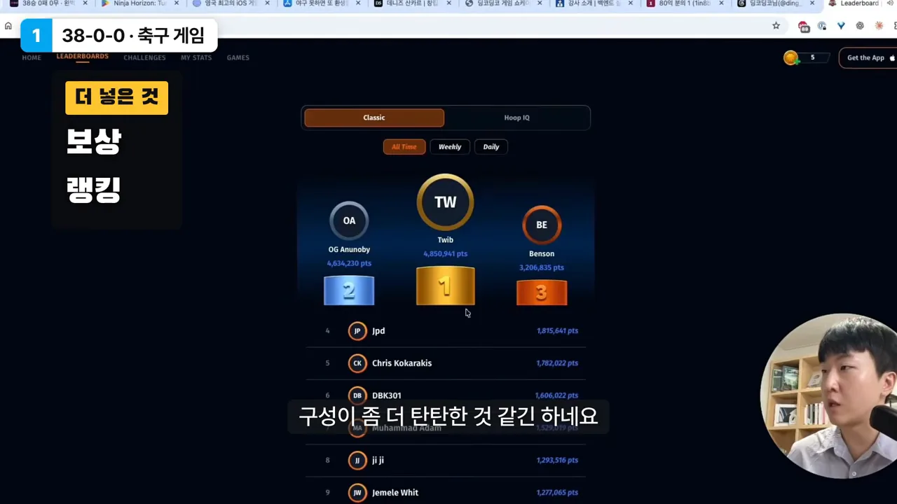
만든 사람은 개발 경험이 전혀 없었어요. 화면에 띄운 기사에는 '저는 소프트웨어 공학 학위 같은 건 없어요'라는 본인 말과 함께, 웹사이트가 첫 주에 180만 명의 방문자를 기록했고 애플 앱 심사에 4일이 걸려 실제 개발 시간의 네 배였다는 내용이 나와요. 홍보는 X, 인스타그램, 틱톡에 직접 올린 게 전부였어요.
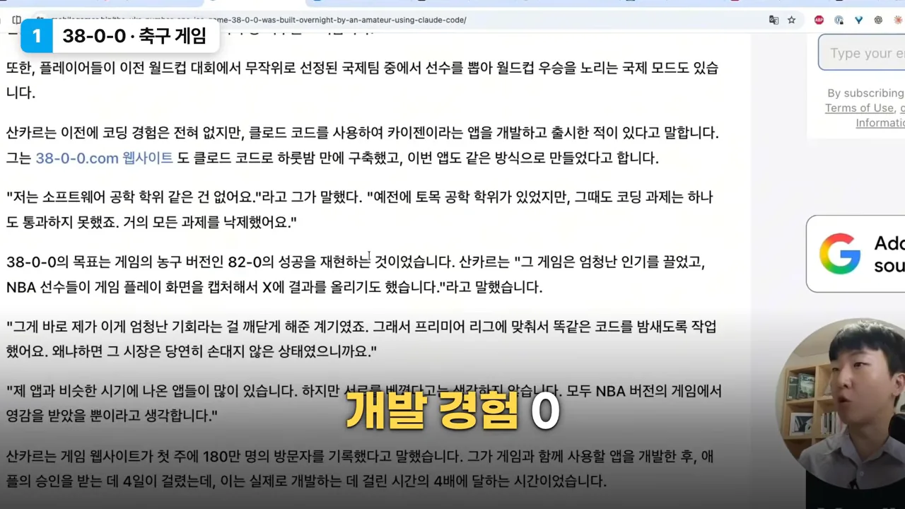
야구 못하면 또 환생함: Codex로 만든 유료 1위
두 번째 사례는 '야구 못하면 또 환생함: 투수 키우기'예요. 외과 의사가 만든 게임이에요. 왼쪽 위 자막처럼 고교 투수를 키우다가 은퇴하면 환생해서 다시 키우는 구조예요. 스토어 이미지에는 '직접 던져야, 내 야구다', '선택 하나로, 다른 선수 인생' 같은 문구가 보여요. 앞의 두 게임처럼 선택이 결과를 바꾸는 시뮬레이션에 가까워요.
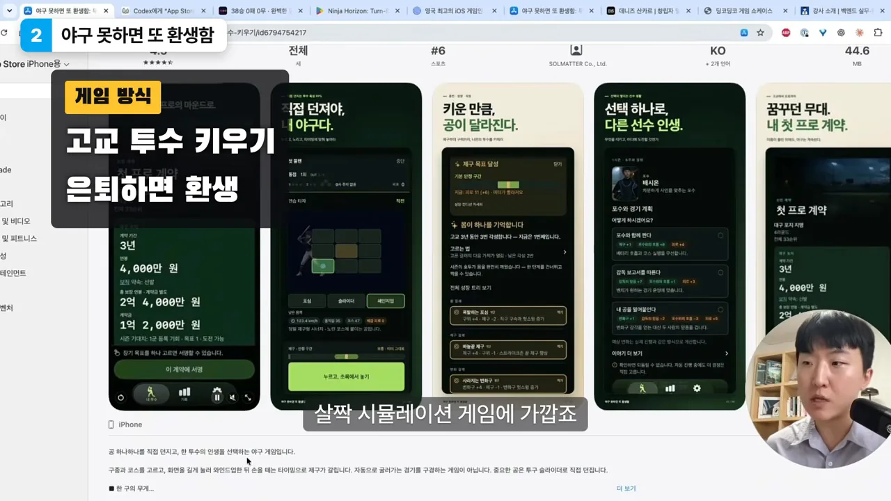
코드 한 줄 없이 Codex로
만든 사람의 블로그 글 첫머리에는 '나는 이 게임의 코드를 한 줄도 직접 쓰지 않았다'고 적혀 있어요. 그 아래 파란색으로 칠한 부분처럼 기획, 개발, 디자인, 아이콘과 스토어 이미지, 테스트, App Store 등록과 심사 제출까지 모두 Codex와 진행했어요.
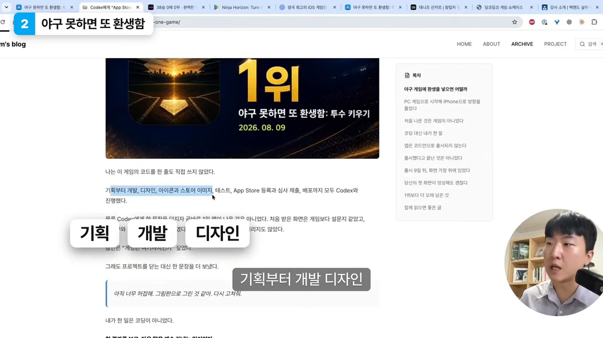
발표자는 이런 게임이 한 번의 클릭으로 나오지 않는다고 짚어요. AI에게 맡기면 처음 화면이 웹 페이지처럼 나오는 경우가 많아요. 발표자 눈에는 지금도 글자가 많아 웹 화면 같대요. 그래도 정보를 계층으로 나누고 버튼을 다듬으면서 게임답게 만들었어요. 아래 선택지 카드를 보면 '감독 보고서를 따른다', '내 공을 밀어붙인다'처럼 선택마다 '감독의 믿음 +7', '피로 +5' 같은 수치 변화가 색깔 태그로 붙어 있어요.
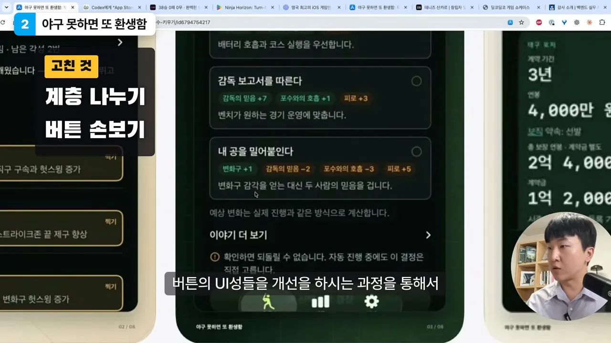
직접 해 보고 어색한 곳을 찾기
개발 일지에는 손맛이 약했던 부분을 어떻게 고쳤는지가 자세히 나와요. 아래는 개선 후 아이폰 화면이에요. 공을 던지면 '110.7 KM/H', '완벽한 릴리스' 같은 결과가 바로 뜨고, 아래에 '길게 눌러 와인드업' 버튼이 있어요. 글에는 '나는 해결책을 말하지 않았다. 기대했던 장면과 실제로 본 장면의 차이를 말했을 뿐이다'라고 적혀 있어요.
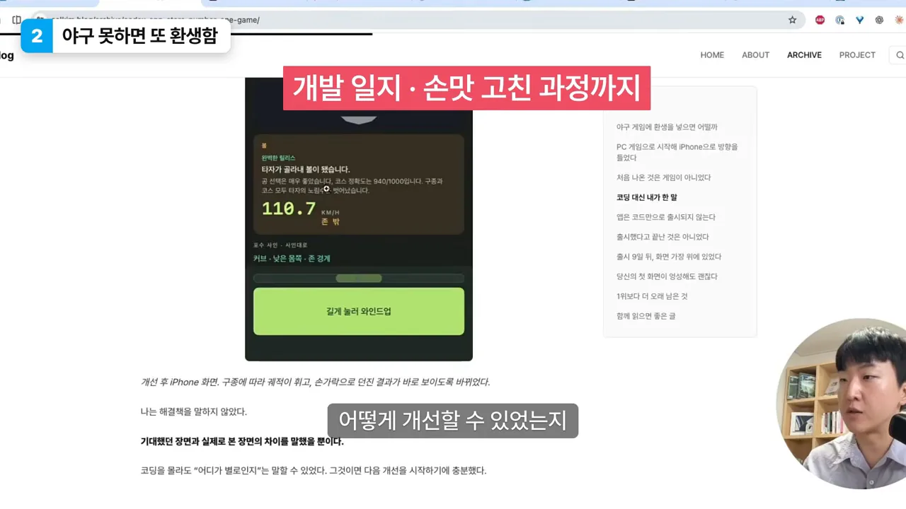
블로그의 다른 소제목도 같은 말을 해요. '앱은 코드만으로 출시되지 않는다'는 제목 위에 '어색한 곳 직접 찾기'라는 자막이 겹쳐 있어요. 발표자가 이 사례에서 가장 중요하게 본 점이에요.
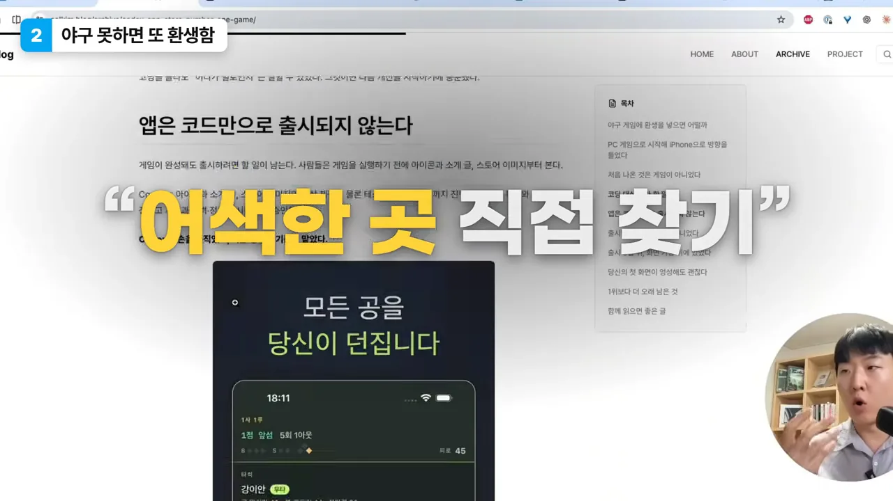
성과도 눈에 띄어요. 이 게임은 4,400원짜리 유료 앱인데, 출시 9일 뒤인 8월 9일 한국 App Store '게임 > 스포츠' 유료 게임 1위에 올랐어요. 바로 아래 2위가 10,500원짜리 OOTP(Out of the Park) Baseball 27 Go!예요.
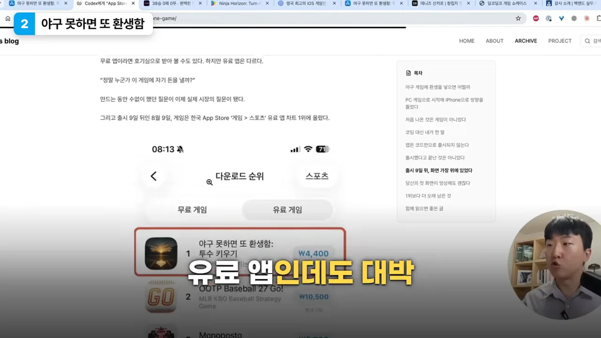
닌자 호라이즌과 개발자에게 익숙한 스택
세 번째는 턴제 RPG(Role-Playing Game) 닌자 호라이즌이에요. 화면은 만든 사람이 레딧 r/aigamedev에 올린 글이에요. 제목을 풀면 AI로 오래된 플래시 게임을 되살렸고, 코드는 한 줄도 쓰지 않았고, 단 이틀 만에 사용자 300명과 800달러 수익을 올렸다는 내용이에요. 본문에는 베타 테스트 중이라고 적혀 있고, 아래 대시보드 캡처에 Revenue $811이 보여요.
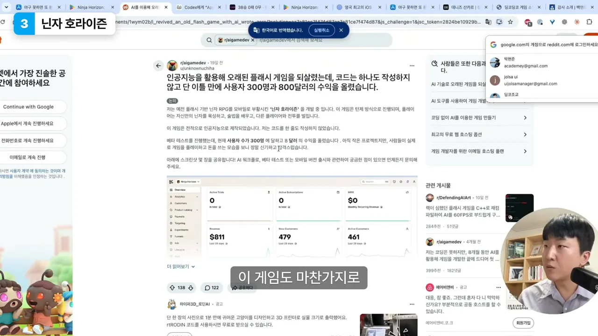
발표자는 숫자보다 이런 장르도 AI로 만들 수 있다는 점에 주목하라고 해요. 그러면 내가 이 장르에서 어떤 장점을 보탤 수 있을지 생각해 볼 수 있다는 거예요.
개발자에게 익숙한 스택
같은 글의 댓글에서 만든 사람은 기술 스택을 밝혀요. 백엔드는 Supabase, 앱은 React Native로 만들었어요. 화면에서 'React Native'가 파란색으로 칠해져 있고, 그 옆 문장은 게임이 결국 코드 그 자체라서 AI가 큰 힘을 발휘했다는 내용이에요.
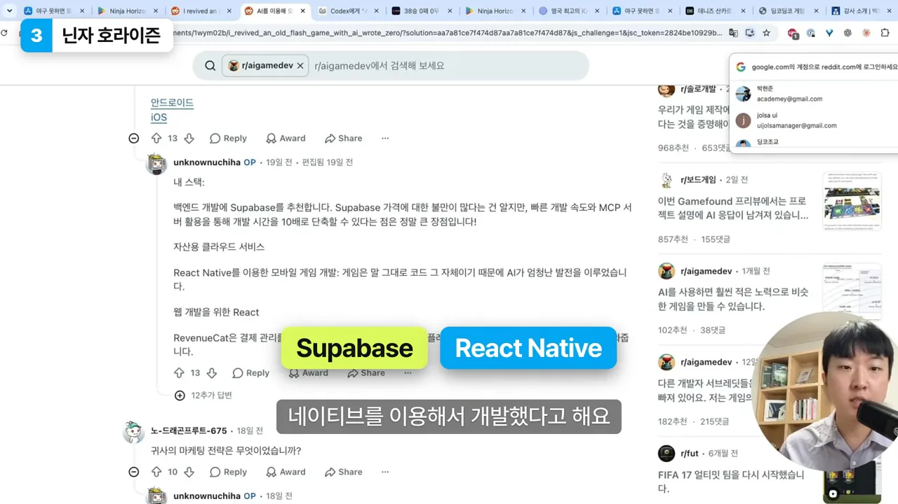
세 사례를 나란히 보면 이렇게 정리돼요.
| 게임 | 장르 | 만든 사람 | 쓴 도구 | 성과 |
|---|---|---|---|---|
| 38-0-0 | 축구 드래프트 | 개발 경험 없음 | Claude Code | 영국 무료 게임 1위 |
| 야구 못하면 또 환생함 | 투수 육성 시뮬레이션 | 외과 의사 | Codex | 한국 스포츠 유료 1위 |
| 닌자 호라이즌 | 턴제 RPG | (영상에서 안 밝힘) | Supabase, React Native | 베타 사용자 300명, 약 800달러 |
내 게임에 넣어 볼 것
마지막으로 발표자는 자기 게임을 돌아봐요. 아래는 발표자가 Codex와 Claude Code로 만든 모바일 게임·앱 14종을 모은 쇼케이스 페이지예요. 위쪽 숫자가 14, 10, 13이고, 아래로 'AI 장편 내 생각 언제', 'Promise Paws', '낭생 역전' 같은 게임 카드가 이어져요.
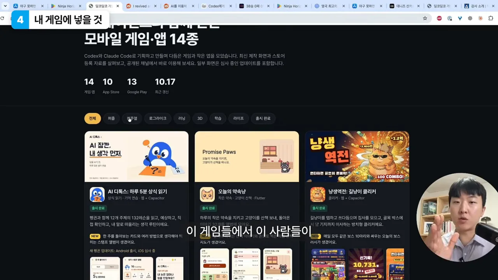
발표자의 반성은 이래요. 정답에 가까운 행동을 기계적으로 똑같이 반복하는 게임만 만든 건 아닌가 하는 거예요. 그래서 넣어 볼 것을 두 줄로 정리해요. 왼쪽 위 자막처럼 '선택이 결과를 바꾸게', '결과는 매번 다르게'예요. 앞서 본 '또 하고 싶어지는 이유'의 내 선택, 매번 다른 결과와 그대로 겹쳐요.
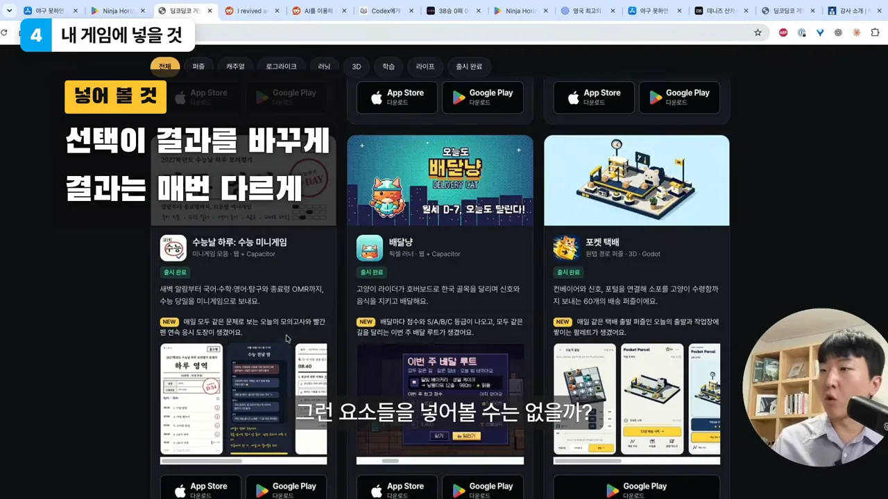
구체적인 수단으로는 업적과 '한 판 더'를 꼽아요. 아래 화면은 발표자 게임의 업적 목록이에요. '업적'과 '이번 주 변이' 카드가 나란히 있고, 업적마다 진행도와 보상이 붙어 있어요. 이런 요소로 리플레이성을 높여 사람들이 게임을 좋아하게 만들어 보겠다고 해요.
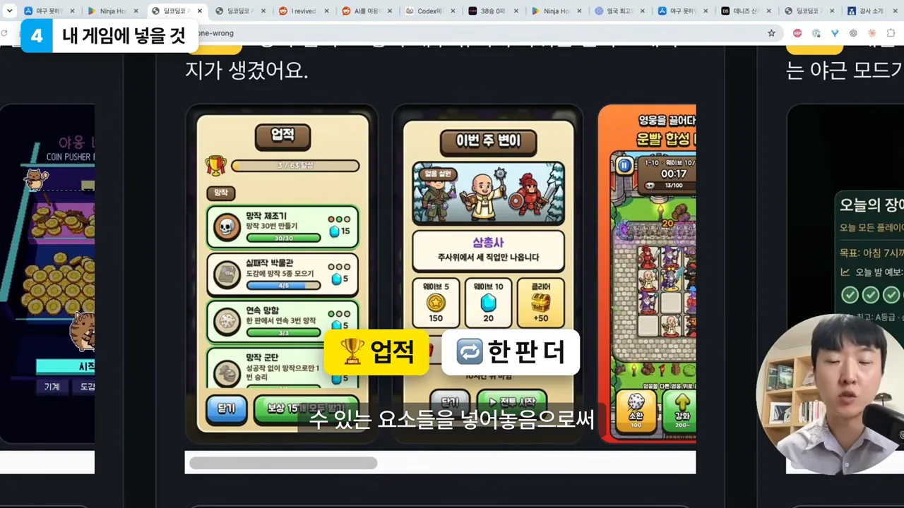
발표자는 100만 다운로드가 될 때까지 게임 개발을 이어 가겠다며 영상을 마무리해요.